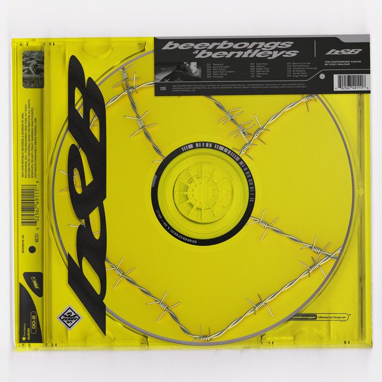

Juice WRLD

Trippie Redd

$uicideBoy$

Post Malone

Bryson Tiller

Below are 5 album covers to 5 artists whose music has changed the way I view life. From these 5 there are two that stand out more than the rest for me. Those being Juice WRLD and $uicideBoy$. If you have any prior knowledge of these artists, you would see me as an emotionally damaged kid listening to emotionally damaged people. Yet I feel normal in my walk of life, the pains these artists convey is deeply moving to me and in fact I feel I benefit from hearing their messages and learning from their mistakes.